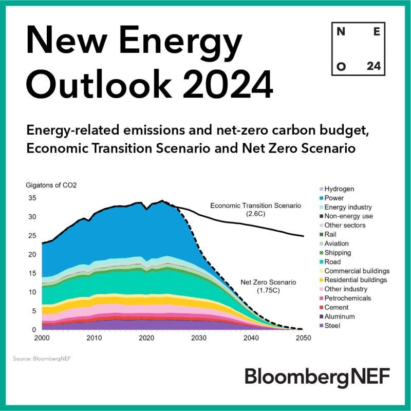
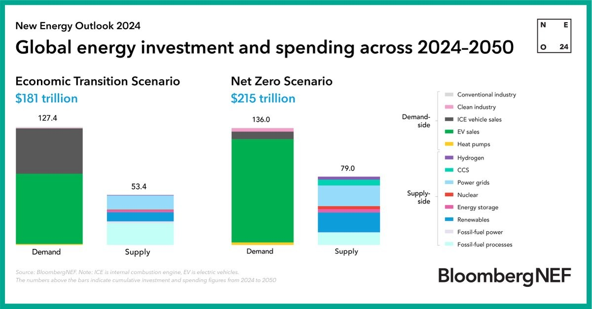

As we race toward the critical goal of net-zero emissions by 2050, the clock is ticking. The opportunity for meaningful action is closing fast, and while we've made some strides, we need to ramp up our efforts significantly to stay on track. Let’s explore the key points regarding the energy transition and the actions necessary to combat climate change effectively.
Why Immediate Action is Essential
Limiting global warming to 1.75°C is no small feat, and achieving net-zero emissions is at the heart of this challenge. Despite remarkable advancements in clean technologies and increased investments, our emissions levels remain stubbornly high. According to BloombergNEF (BNEF), we must accelerate our shift to renewable energy and green fuels if we hope to meet this ambitious target. While carbon neutrality by mid-century may seem daunting, it is still within our reach—if we act decisively now.
Peak Emissions: A Call to Action
To align with our net-zero objectives, we need to peak global emissions and fossil fuel use immediately across all sectors—power generation, transportation, industry, and buildings. This decade is pivotal; we’ve reached the halfway point, and the time for change is now.
Embracing Renewable Energy
A significant portion of the emissions reductions we need can be achieved through cleaner power generation. We must accelerate our transition to renewable energy sources, aiming to triple our renewable capacity by the end of this decade. If we let market forces lead the way, renewables could account for over 50% of electricity generation by 2030.

Key Technologies Driving Change
Several innovative technologies are crucial for this transition:
- Smart Grids: These systems are vital for managing electricity flow and integrating renewable sources efficiently.
- Battery Storage: Essential for storing energy from intermittent sources like solar and wind, ensuring a reliable power supply.
- Electric Vehicles (EVs): The adoption of EVs is skyrocketing, with rapid growth in both sales and battery manufacturing capacity.
- Green Hydrogen: This emerging technology holds promise for decarbonizing sectors that are difficult to electrify directly.
Investment: The Fuel for Transition
To make this transition a reality, we need an urgent increase in investment. For every dollar spent on fossil fuels, we should allocate around three dollars to low-carbon energy solutions over the next decade. The total cost of achieving a fully decarbonized global energy system by 2050 is estimated at $215 trillion—a figure that represents only a 19% increase compared to a scenario where we miss the Paris Agreement goals.

Global Investment Trends
In 2023 alone, global investment in the energy transition soared to $1.8 trillion, reflecting a 17% increase from the previous year. This surge demonstrates a growing commitment across sectors to deploy clean technologies that can drive us toward a sustainable future.
Conclusion: A Collective Path Forward
The journey to net-zero emissions by 2050 requires immediate action on multiple fronts: peaking emissions now, investing heavily in clean technologies, and shifting towards renewable energy sources. While challenges remain—especially in sectors that are harder to decarbonize—there's still time for decisive action that can secure a sustainable future for our planet. Together, we can rise to this challenge and create a cleaner, greener world for generations to come!